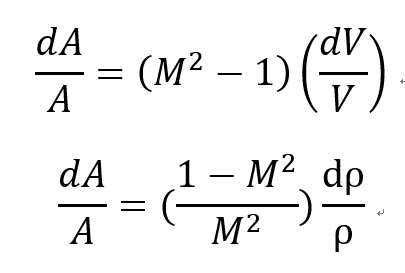
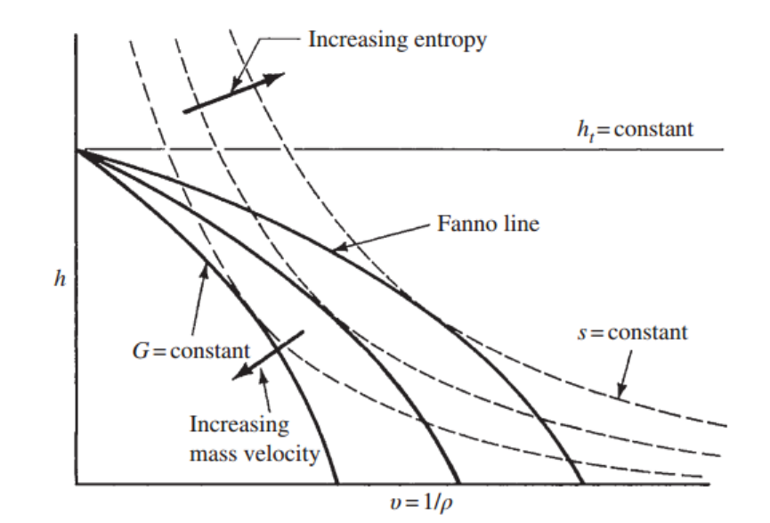
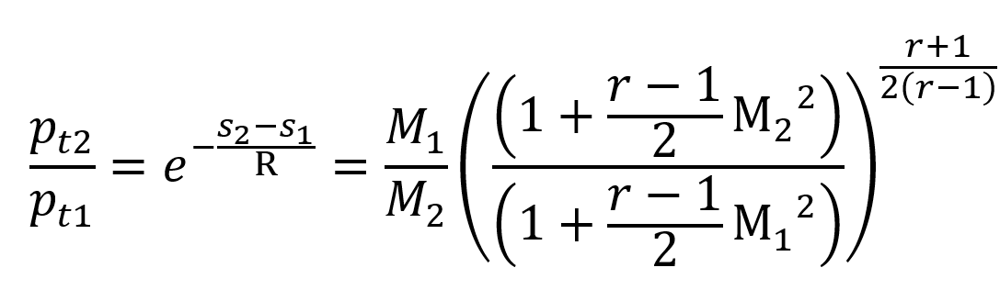
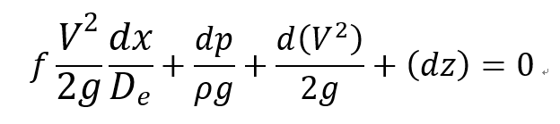
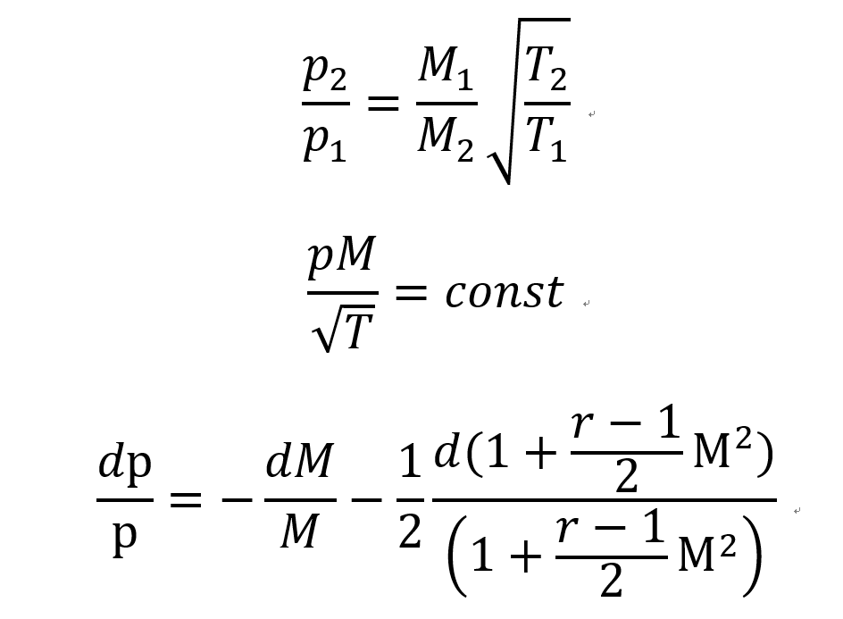
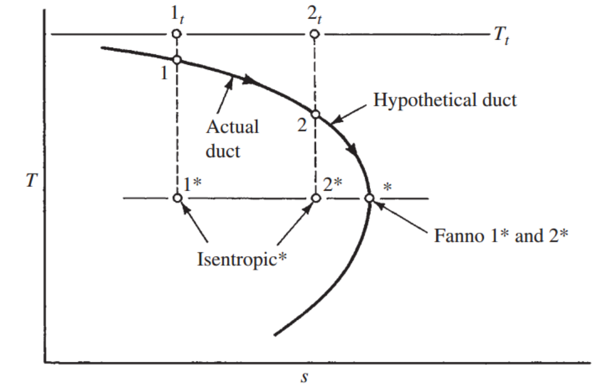
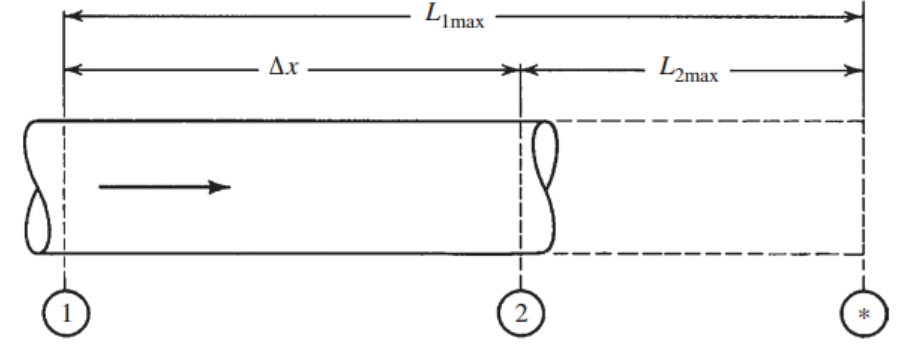

[Gas Dynamics] Ch 9 Fanno Flow - part 1
지금 우리가 뭐하고 있는지 다시 짚어 보자.
Ch5 에서 Area가 Change 하는 경우
Continuity Equation, Ideal gas flow 로부터
밑의 식을 유도 했었다.

dA/A를 substitute 해주면,
![[Gas Dynamics] Ch 9 Fanno Flow - part 1](./images/img-002.png)
위 식이 의미하는 바는 마하수 M이 클수록
밀도 변화가 속도 변화에 주는 영향이 커진 다는 것이다.
유체역학 시간에
배웠던 거의 모든 Flow들은
Incompressible flow
즉, 밀도변화를 무시할 수 있는 유체의 흐름이 었다.
However, Gas Dynamics에서 우리는 Compressible flow
밀도 변화가 있는 경우 유체의 흐름을 분석하고있다.
그리고
Compressible Flow에서 가장 중요한 3가지 Factor
에 대해서
Ch5에서 언급하였다
1. Area change
2. Friction
3. Heat transfer
So far, 우리는 Area change 하는 경우의 Flow
+ Shock
+Expansion wave
에 대해서 알아보았다.
이제는 2번째 Factor Friction 이 있는 경우 를 해석해보자
![[Gas Dynamics] Ch 9 Fanno Flow - part 1](./images/img-003.png)
위 사진과 같이 C.V을 설정해주고 다음과 같은 가정을 해주자..
Assumptions
- .Steady 1-D flow
- Adiabatic
- No shaft work
- Neglect potential
- Constant Area
- Friction Exists
이제 뭘 해야할지 느낌이 오실 것이다. - Continuity Eq, 2.Momenum Eq, 3. Energy Eq.
연속방정식, 에너지 보존식을 먼저 살펴보면
![[Gas Dynamics] Ch 9 Fanno Flow - part 1](./images/img-004.png)
면적이 같으므로
ρV 는 일정하다 따라서
우리는 G라고 정의하고 Mass velocity로 부르자
Stagnation Enthalp도 일정할 것이다.
(No heat transfer and shaft work)
따라서 Neglect potential 이므로 E equation을
Mass velocity(G)와 ρ로 표현해보자
![[Gas Dynamics] Ch 9 Fanno Flow - part 1](./images/img-005.png)
위 식을 그래프로 한번 그려보자.
ht 는 일정하기 때문에
G가 일정한 경우 ->
h, 1/ ρ 반비례

위 사진을 보면 G가 일정한경우의 h-v Line을 Fanno Line 이라고 부른다.
뿐만아니라 위 그래프에서 엔트로피 Line(점선)을 보면
Fanno Line은 v가 증가할때
엔트로피 증가 -> 최대 -> 감소
임을 눈으로 확인 할 수 있다.
Fanno line에서 엔트로피 변화를 보기 위해 h-s그래프로 옮겨보자
![[Gas Dynamics] Ch 9 Fanno Flow - part 1](./images/img-007.png)
위 그래프를 통해서 우리는
각 Fanno line마다 엔트로피가 Max인 지점이 있다는 것을 확인 할 수 있다.
그 지점이 무엇이고 의미하는게 뭘까??
먼저 위에서의 continutiy eq 과 Energy eq을 각각 미분해주자.
![[Gas Dynamics] Ch 9 Fanno Flow - part 1](./images/img-008.png)
위 dV 를 밑에 대입해주면
![[Gas Dynamics] Ch 9 Fanno Flow - part 1](./images/img-009.png)
여기서 ds = 0 지점을 우리는 분석하려고 하므로,
Energy equation 을 통해서
![[Gas Dynamics] Ch 9 Fanno Flow - part 1](./images/img-010.png)
![[Gas Dynamics] Ch 9 Fanno Flow - part 1](./images/img-011.png)
위에서 구한 dh를 대입해주면 최종적으로 ds = 0 일때,
s max 일때,
우리는 Ma = 1 임을 알 수 있다.
그렇다면 우리는 엔트로피 증가법칙!이 떠오를 것이다.
![[Gas Dynamics] Ch 9 Fanno Flow - part 1](./images/img-012.png)
따라서,
Upper branch: State 1 -> 2 -> Limiting point
Subsonic -> high subsonic -> sonic
Lower branch: State 3 -> 4 -> Limiting point
Supersonic -> low supersonic -> sonic
아주 신기하게 마찰이 있는데 subsonic은
속도가 증가하여 Ma =1, sonic flow가 된다는것;;;
조금 더 식을 통해서 정확히
Property들을 표현해보자.
이제 1->2 과정에서 온도, 압력 , 정적압력 변화를 살펴보자.
먼저 온도 비율은 Stagnation enthalpy 를 통해
![[Gas Dynamics] Ch 9 Fanno Flow - part 1](./images/img-013.png)
다음 압력비율은 연속방정식으로
![[Gas Dynamics] Ch 9 Fanno Flow - part 1](./images/img-014.png)
마지막으로 Stagnation Enthalpy는
Tds = dh - vdp, p=
ρRT 식 적분을 통해
![[Gas Dynamics] Ch 9 Fanno Flow - part 1](./images/img-015.png)
따라서 Stagnation pressure- entropy equation 에 대입해주면

마지막으로 the most important 할일이 하나 남았다.
Momentum eq을 통해 마찰력을 계산하는것 !!
가정 1->2 길이 = dx
why? dx에 관한 마찰식 밑에 알고 있으니
나중에 적분할려고
[혹시 모르시면 밑에 링크 참고!]
https://jeffdissel.tistory.com/7
[ch3 에서 증명한 friction flow momentum + energy equation]

여기서 potential term 을 무시하고 V= Ma, p =
ρR
T 를 대입해주자.
![[Gas Dynamics] Ch 9 Fanno Flow - part 1](./images/img-018.png)
이제 dp/p와 dT/T를 f(M,r)로 표현하여,
마찰 term을 M,r로 표현해보자
![[Gas Dynamics] Ch 9 Fanno Flow - part 1](./images/img-019.png)

따라서 위 T,P ratio를 마찰력식에 대입해주면
정말 복잡하지만 M,r에 관한 함수로 마찰력 표현 가능..
![[Gas Dynamics] Ch 9 Fanno Flow - part 1](./images/img-021.png)
이를 State1 -> State2 로 적분해주면
![[Gas Dynamics] Ch 9 Fanno Flow - part 1](./images/img-022.png)
이 식이 의미하는 것은,
Friction 손실량을 우리는 M1,M2,r을 통해서 derive 할 수 있고,
Inlet M1, 관의 길이,f 를 안다면 outlet M2를 유도할 수도 있다.
여기서 과학자들은,
Expansion wave 처럼 기준점을 하나 잡아 간편한 식으로 만든후
Table에 Plot할 생각을 함.
[기준점은 다음과 같이 정의]
: Reference point for Fanno flow 라고 부르고
기준점은 시작때 언급하였던 ds = 0 인
Fanno line에서 Ma = 1인 지점이다.

위 마찰력 식에서
State1: M1 = M, M2 = M1 = 1 을 대입해보자.
![[Gas Dynamics] Ch 9 Fanno Flow - part 1](./images/img-024.png)
즉 우리는 Inlet Ma,r 을 알면 마찰력 term을 알 수 있다.
위 방법으로 Fanno Table 에 M에 따른 f(x-x)/D 가 표시 되어 있다.
뿐만 아니라, 조금 전에 구한 T2/T1, P2/P1, Pt2/Pt1 에도
똑같은 방법으로
State 1 - > * (reference point)
라고 생각하고
M1 = M, M2 = M = 1 을 대입하여
M 에 따른 값들을 Fanno Table에 표시완료
잠깐.
Q. 여기서 x-x가 의마하는게 뭘까?
![[Gas Dynamics] Ch 9 Fanno Flow - part 1](./images/img-025.png)
바로 Inlet Ma = M1 일때,
State 1 -> * (reference point) 까지 가기 위한
관의 길이 이다.
마지막으로 예제를 풀고 Part2로 넘어가보자.
Q. M1 = 1.80, p1 = 40psia, M2 = 1.20
find p2 and f△x/D

Fanno table을 보면,
M1 = 1.80 일때,
f(Lmax1)/D = 0.2419
= [State 1 -> * (reference point) 까지 거리]
p1/p = 0.4741,
M2 = 1.20 일때,
f(Lmax2)/D = 0.2419
= [State 2 -> * (reference point) 까지 거리]
p2/p = 0.8044.
따라서 State 1 -> 2거리 =
[State 1 -> * 거리] - [State 2 -> * 거리]
f△x/D = 0.2419-0.0336 = 0.208
아주 중요 별표 만개
State 2와 State1 모두 둘다 같은 Reference point를 향해서 간다
Why?
State 1 과 2 는 같은 Fanno line:
ρV = G = 일정
따라서 두 State 모두 최종적으로 바라보는 지점()이 동일하다
결국 P1 = P2 = P
따라서,
p2 = p2/p x p/p1 p1= 0.8044 / 0.471 40 = 67.9psia